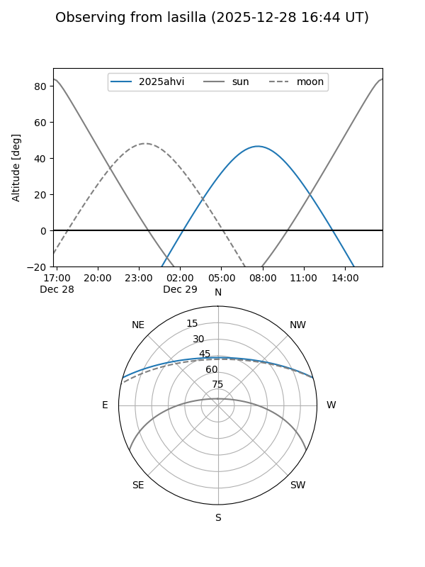
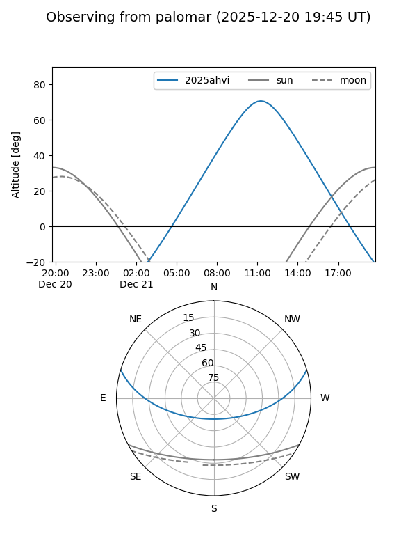

2025ahvi
Target 2025ahvi at 2025-12-31 17:00
Aliases and brokers:
FINK:
Lasair:
ALeRCE:
TNS:
YSE:
alt names
ZTF25acjpdld (ztf,fink_ztf)
2025ahvi (tns,yse)
PS25irw (panstarrs)
Coordinates:
equatorial (ra, dec) = 141.8476,+14.21706
equatorial (HMS+DMS) = 09:27:23.43,+14:13:01.40
galactic (l, b) = (217.4488,+40.90315)
Flags:
Photometry:
last ztfg=18.51, ztfr=18.71
3 ztfg, 2 ztfr detections
Lightcurve

Visibility


Additional plots